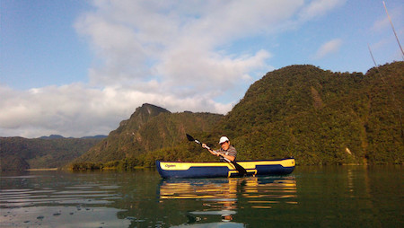
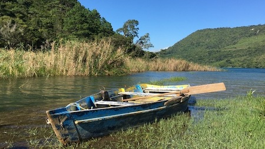

Learn everything about the activities that Laguna Brava offers to its visitors.
Activities
The communities offer two activities for guided visits that allow visitors to enjoy Laguna Brava's natural beauty.
In both activities, members of the Laguna Brava community provide life vests and local guides who know the lake very well to ensure your safety.
The Lake Challenge

Cross the four kilometers in a kayak.
Put your strengths to work by crossing the four kilometers in a kayak guided by a local guide.
This adventure is physically demanding and recommended only for those in excellent physical condition.
Duration: 5 hours approx.
Price: USD $50
Minimum: 2 pax
Sit Back & Relax

Board a rowing boat and admire the nature of Laguna Brava.
Admire the nature of Laguna Brava by boarding a rowing boat around the most beautiful parts of the lake.
This guided visit does not require physical effort.
Duration: 5 hours approx.
Price: USD $30
Minimum: 4 pax
The Local Communities
The area around Laguna Brava has been inhabited by Mayan communities of the
Chuj ethnicity since the 19th century.
Members of these communities welcome travelers from all regions of the world looking for adventure and nature.
They believe that visitors and responsible ecotourism practices are essential to support the development
of their communities.